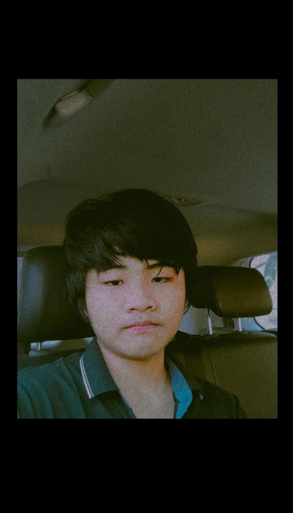

Let me talk about Thu Rein Zaw, one of my friends.
I first met him at the school four years ago. At the time,we were very young. Within days of meeting him, I was very friendly and he friendly too. He was smart student in the class and his preferred subject was English. He is man of high hopes and he always try the best. He has some good habits and some bad ones. His good habits are friendly and kindness to friends. One of my favorite things about him is that he doesn't give up easily. His bad habit is using a lot of money. He has more good habit than bad habit. He loves to travel and most travel to the mountains. His hobbies are studying technology equipped with car and airplanes. His dream is airline pilot. He would like to be a pilot on a delta airline. I belive his hope will come true.
